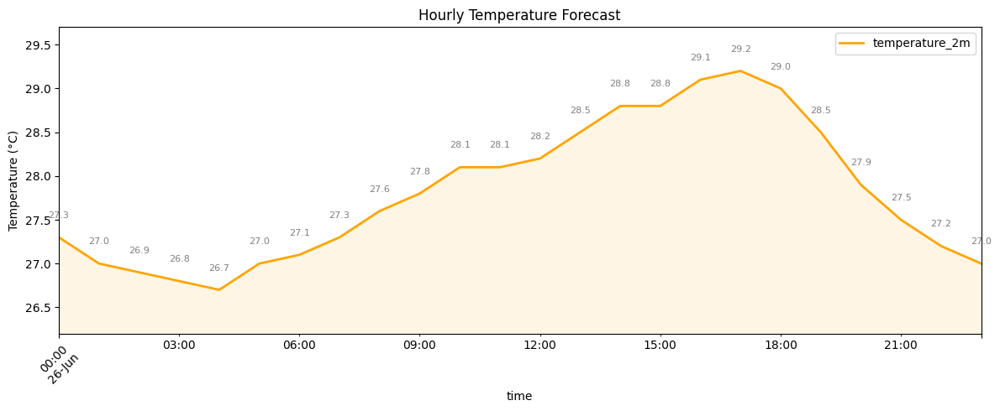

Weather Forecast using OpenMeteo API#
Introduction#
Open-Meteo is an open-source weather API that allows you to easily query and extract weather forecasts from multiple models. It also offers a Historical Weather API to get past weather data. In this tutorial, we will work with the Weather Forecast API and get multiple variables for a given location.
Overview of the Task#
We will get a 10-day forecast for multiple weather variables and save the results as a CSV file. We will also get hourly forecast for temperature and create a chart.
Outputs:
daily_forecast.csv: A CSV file containing 10-day forecast for the chosen location.hourly_forecast.png: A PNG image showing the chart of hourly temperature forecast.
Running the Notebook:
The preferred way to run this notebook is on Google Colab.

Setup and Data Download#
import datetime
import matplotlib.dates as mdates
import matplotlib.pyplot as plt
import numpy
import os
import pandas as pd
import requests
data_folder = 'data'
output_folder = 'output'
if not os.path.exists(data_folder):
os.mkdir(data_folder)
if not os.path.exists(output_folder):
os.mkdir(output_folder)
Configuration#
Select the location and variables of interest.
# Coordinates in Latitude/Longitude format
location = (23.025, 72.564)
# Use the TZ identifier from
# https://en.wikipedia.org/wiki/List_of_tz_database_time_zones
timezone = 'Asia/Kolkata'
# Weather variables to query
# See all variables at https://open-meteo.com/en/docs#daily_parameter_definition
daily_forecast_variables = [
'temperature_2m_min', 'temperature_2m_max',
'relative_humidity_2m_mean', 'precipitation_sum',
]
# See all variables at https://open-meteo.com/en/docs#hourly_parameter_definition
hourly_forecast_variable = 'temperature_2m'
# We can query upto 16-days in the future
forecast_days = 10
Get Daily Forecast#
We can get a daily forecast by specifying the daily parameter to the request. Configure a dictionary of required parameters and query the URL using the requests library.
params = {
'latitude': location[0],
'longitude': location[1],
'daily': daily_forecast_variables,
'forecast_days': forecast_days,
'timezone': timezone
}
url = 'https://api.open-meteo.com/v1/forecast'
responses = requests.get(url, params=params)
Read the API JSON response and convert it to a dictionary.
data = responses.json()
The response contains the daily forecast in the daily field. Extract it and convert it to a Pandas DataFrame.
daily_forecast = data.get('daily')
daily_forecast_df = pd.DataFrame(daily_forecast)
daily_forecast_df
| time | temperature_2m_min | temperature_2m_max | relative_humidity_2m_mean | precipitation_sum | |
|---|---|---|---|---|---|
| 0 | 2025-06-26 | 26.7 | 29.2 | 91 | 34.8 |
| 1 | 2025-06-27 | 26.0 | 29.4 | 91 | 18.2 |
| 2 | 2025-06-28 | 26.0 | 28.4 | 87 | 2.3 |
| 3 | 2025-06-29 | 25.8 | 31.2 | 84 | 3.1 |
| 4 | 2025-06-30 | 26.4 | 33.2 | 79 | 0.3 |
| 5 | 2025-07-01 | 26.5 | 32.9 | 79 | 0.3 |
| 6 | 2025-07-02 | 26.5 | 28.2 | 91 | 21.0 |
| 7 | 2025-07-03 | 25.6 | 31.1 | 86 | 36.6 |
| 8 | 2025-07-04 | 26.5 | 28.8 | 78 | 3.0 |
| 9 | 2025-07-05 | 26.2 | 30.7 | 74 | 0.9 |
Save the results to a CSV file.
output_file = 'daily_forecast.csv'
output_path = os.path.join(output_folder, output_file)
daily_forecast_df.to_csv(output_path, index=False)
Get Hourly Forecast#
The OpenMeteo API also offers granuar hourly forecasts by specifying the hourly parameter. For this tutorial, we will get hourly forecast for a single day and create a chart with the result.
params = {
'latitude': location[0],
'longitude': location[1],
'hourly': hourly_forecast_variable,
'models': 'best_match',
'forecast_days': 1,
'timezone': timezone
}
url = 'https://api.open-meteo.com/v1/forecast'
responses = requests.get(url, params=params)
Read the API JSON response and convert it to a dictionary.
data = responses.json()
The response contains the daily forecast in the hourly field. Extract it and convert it to a Pandas DataFrame.
hourly_forecast = data.get('hourly')
hourly_forecast_df = pd.DataFrame(hourly_forecast)
hourly_forecast_df
| time | temperature_2m | |
|---|---|---|
| 0 | 2025-06-26T00:00 | 27.3 |
| 1 | 2025-06-26T01:00 | 27.0 |
| 2 | 2025-06-26T02:00 | 26.9 |
| 3 | 2025-06-26T03:00 | 26.8 |
| 4 | 2025-06-26T04:00 | 26.7 |
| 5 | 2025-06-26T05:00 | 27.0 |
| 6 | 2025-06-26T06:00 | 27.1 |
| 7 | 2025-06-26T07:00 | 27.3 |
| 8 | 2025-06-26T08:00 | 27.6 |
| 9 | 2025-06-26T09:00 | 27.8 |
| 10 | 2025-06-26T10:00 | 28.1 |
| 11 | 2025-06-26T11:00 | 28.1 |
| 12 | 2025-06-26T12:00 | 28.2 |
| 13 | 2025-06-26T13:00 | 28.5 |
| 14 | 2025-06-26T14:00 | 28.8 |
| 15 | 2025-06-26T15:00 | 28.8 |
| 16 | 2025-06-26T16:00 | 29.1 |
| 17 | 2025-06-26T17:00 | 29.2 |
| 18 | 2025-06-26T18:00 | 29.0 |
| 19 | 2025-06-26T19:00 | 28.5 |
| 20 | 2025-06-26T20:00 | 27.9 |
| 21 | 2025-06-26T21:00 | 27.5 |
| 22 | 2025-06-26T22:00 | 27.2 |
| 23 | 2025-06-26T23:00 | 27.0 |
The time column is set as strings. We convert it to a datetime object with appropriate timezone and set it as the index for the ease of plotting.
hourly_forecast_df.index = pd.to_datetime(hourly_forecast_df['time'])
hourly_forecast_df.index = hourly_forecast_df.index.tz_localize(timezone)
hourly_forecast_df = hourly_forecast_df.drop(columns=['time'])
hourly_forecast_df
| temperature_2m | |
|---|---|
| time | |
| 2025-06-26 00:00:00+05:30 | 27.3 |
| 2025-06-26 01:00:00+05:30 | 27.0 |
| 2025-06-26 02:00:00+05:30 | 26.9 |
| 2025-06-26 03:00:00+05:30 | 26.8 |
| 2025-06-26 04:00:00+05:30 | 26.7 |
| 2025-06-26 05:00:00+05:30 | 27.0 |
| 2025-06-26 06:00:00+05:30 | 27.1 |
| 2025-06-26 07:00:00+05:30 | 27.3 |
| 2025-06-26 08:00:00+05:30 | 27.6 |
| 2025-06-26 09:00:00+05:30 | 27.8 |
| 2025-06-26 10:00:00+05:30 | 28.1 |
| 2025-06-26 11:00:00+05:30 | 28.1 |
| 2025-06-26 12:00:00+05:30 | 28.2 |
| 2025-06-26 13:00:00+05:30 | 28.5 |
| 2025-06-26 14:00:00+05:30 | 28.8 |
| 2025-06-26 15:00:00+05:30 | 28.8 |
| 2025-06-26 16:00:00+05:30 | 29.1 |
| 2025-06-26 17:00:00+05:30 | 29.2 |
| 2025-06-26 18:00:00+05:30 | 29.0 |
| 2025-06-26 19:00:00+05:30 | 28.5 |
| 2025-06-26 20:00:00+05:30 | 27.9 |
| 2025-06-26 21:00:00+05:30 | 27.5 |
| 2025-06-26 22:00:00+05:30 | 27.2 |
| 2025-06-26 23:00:00+05:30 | 27.0 |
We can now plot the forecast on a chart.
fig, ax = plt.subplots(1, 1)
fig.set_size_inches(12,5)
hourly_forecast_df.plot(kind='line', ax=ax, color='orange', linewidth=2)
ax.fill_between(
hourly_forecast_df.index,
hourly_forecast_df['temperature_2m'].values,
color='orange', alpha=0.1
)
# Set the min/max value
y_min = hourly_forecast_df['temperature_2m'].min()
y_max = hourly_forecast_df['temperature_2m'].max()
y_range = y_max - y_min
padding = y_range * 0.2 # 20% headroom
ax.set_ylim(y_min - padding, y_max + padding)
# Add data labels
for x, y in zip(hourly_forecast_df.index, hourly_forecast_df['temperature_2m']):
plt.text(
x, y + 0.2,
f'{y}',
ha='center', va='bottom',
fontsize=8, color='gray'
)
plt.title('Hourly Temperature Forecast')
plt.ylabel('Temperature (°C)')
plt.xticks(rotation=45)
plt.grid(False)
plt.tight_layout()
# Save the plot
output_file = 'hourly_forecast.png'
output_path = os.path.join(output_folder, output_file)
plt.savefig(output_path, dpi=300)
plt.show()

If you want to give feedback or share your experience with this tutorial, please comment below. (requires GitHub account)